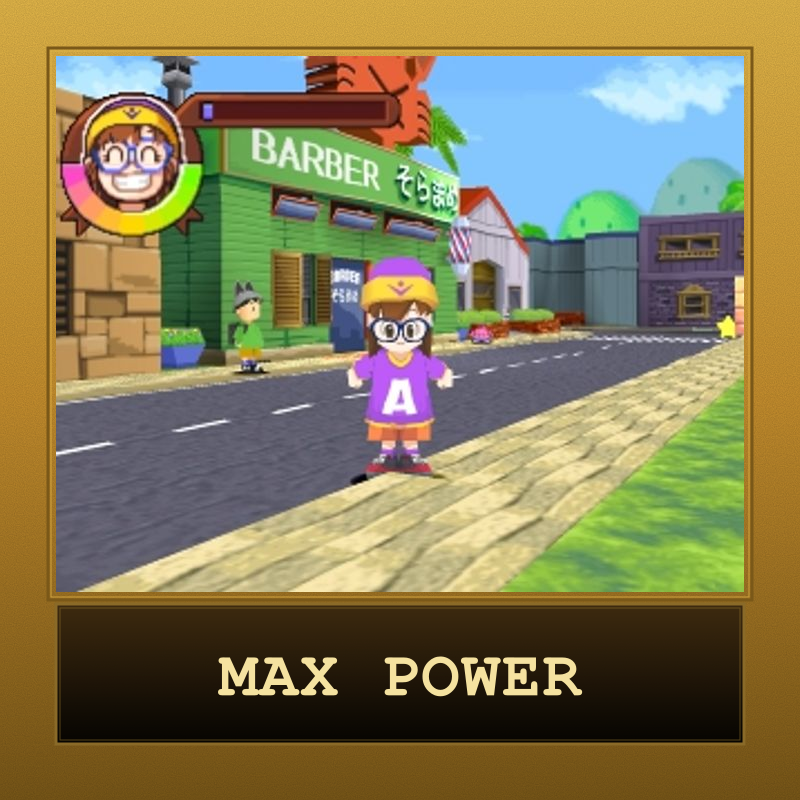
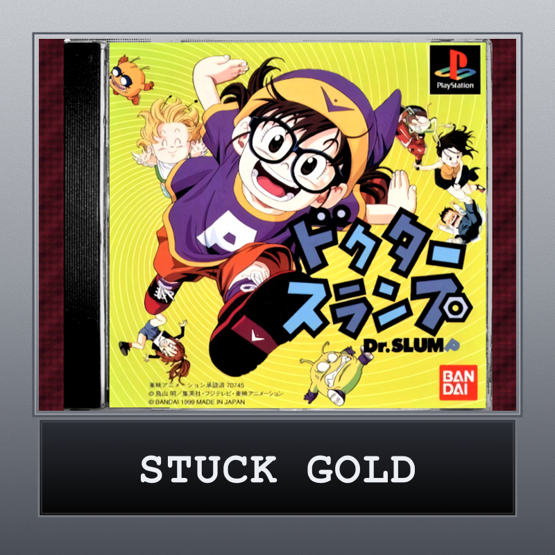
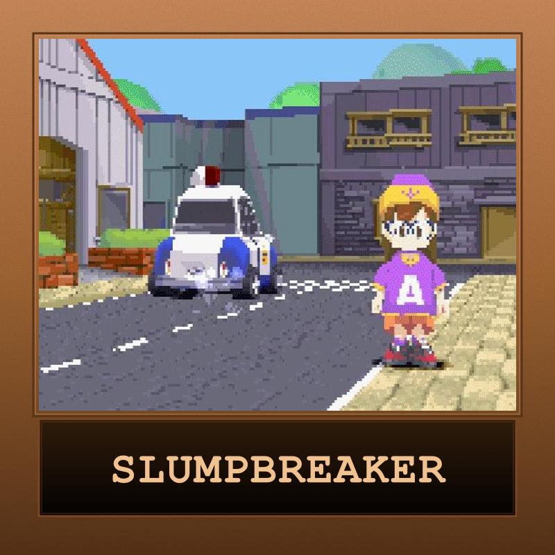

Dr. Slump
A whimsical 3D action-adventure starring Arale Norimaki, the unstoppable robot girl from Akira Toriyama's slapstick manga. Explore Penguin Village, brawl with neighbors, race the Pro Circuit, and chase the legendary golden unchi. A Japan-only PlayStation oddity that crams platforming, dungeon-crawling, and mini-games into one Toriyama love letter.
| Platform | Sony PlayStation |
|---|---|
| Genre | 3D Action-Adventure / Mini-Games |
| Released | (Japan-only) |
| Developer | Bandai |
| Publisher | Bandai |
| Available | PlayStation (NTSC-J), Emulation |
How Long to Beat
Community estimate — no formal HLTB entry
Where to Play
About This Game
Dr. Slump for the PlayStation, released by Bandai on March 18, 1999, is a 3D action-adventure based on the 1997 anime remake of Akira Toriyama's beloved manga. Players control Arale Norimaki — the gleefully oblivious robot girl built by Senbei "Dr. Slump" Norimaki — as she runs, jumps, kicks, and punches her way through Penguin Village. Between platforming dungeons and combat encounters, the game leans hard on its source material's slapstick comedy: chatting up neighbors, gathering odd items, and tripping into mini-games that range from scooter races to memory puzzles.
The game's headline mode is the Pro Circuit, a series of escalating mini-game challenges that test mastery across the full minigame suite. Reach the maximum tier and the game grants you bragging rights — a feat few outside Japan have ever pulled off. Stage 5 hides the manga's most iconic running gag: golden unchi, the legendary poops Arale famously prods with a stick. Collect them all and you're either a true Toriyama fan or a deeply patient completionist. Possibly both.
Did You Know?
- Toriyama's first big hit — Dr. Slump ran in Weekly Shōnen Jump from 1980 to 1984 and predates Dragon Ball. It was Akira Toriyama's breakout series and shaped the visual language he'd later carry into Goku's adventures.
- Arale > Goku? — Arale Norimaki is canonically one of the most absurdly powerful characters in Toriyama's universe. She crosses over into Dragon Ball multiple times — and in one episode, fights Goku to a draw.
- The unchi is sacred — The series' most enduring running gag is Arale poking poops with a stick. The PS1 game leans in: Stage 5's golden unchi collectibles are a deep-cut tribute to the manga's most beloved prop.
- Never localized — While the manga and both anime adaptations got Western releases, this PS1 game stayed Japan-only. Fan translation patches are the only way to play in English — making it a cult import for Toriyama completists.
Critical Reception
Dr. Slump received minimal Western press given its Japan-only release. Coverage below is from Japanese outlets and the import community.
Club Achievements

Max Pro Circuit
Gold
Golden Poops
Silver
Beat the Game
BronzeOther Participants
All participants earned trophies this month!
Speedrun Records
Dr. Slump has a small but dedicated import speedrunning community. With no major Western leaderboard, runs are tracked informally — but a Japanese any% clear typically lands in the 3–4 hour range.
No formal speedrun.com leaderboard exists for the PS1 release.
Soundtrack
Composed for the Bandai team
Dr. Slump's PS1 soundtrack draws heavily from the 1997 anime score, leaning into upbeat, cartoony arrangements that match Penguin Village's sunshine-and-slapstick tone. Expect bouncy synth melodies during exploration, sillier-than-serious boss themes, and chiptune-flavored mini-game cues that pivot to high-energy speed during the Pro Circuit challenges.
Notable Tracks
- Penguin Village Theme
- Arale's Run
- Gatchan's Lullaby
- Pro Circuit Race
- Boss Battle — Suppaman
- Ending Theme
Sources & Attribution
- Game info and plot summary adapted from PSXDataCenter
- Background on Akira Toriyama's Dr. Slump manga from Wikipedia
- Achievement reference from RetroAchievements
- ISO preservation via Internet Archive
- English translation patches via RomHacking.net
- Box art via LaunchBox Games Database